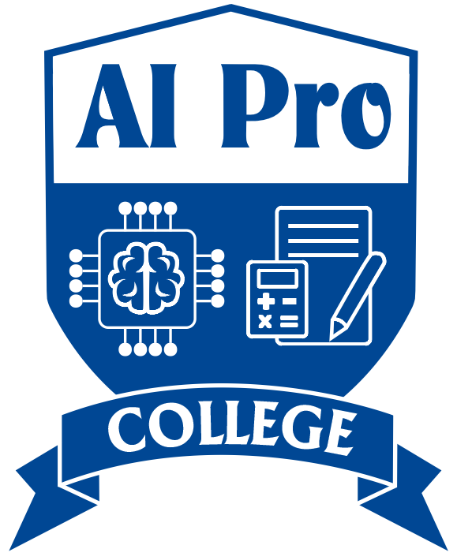
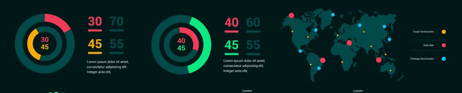
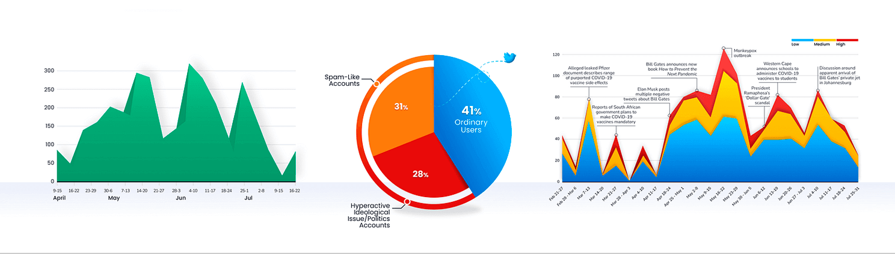
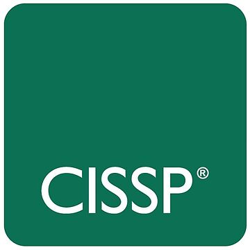
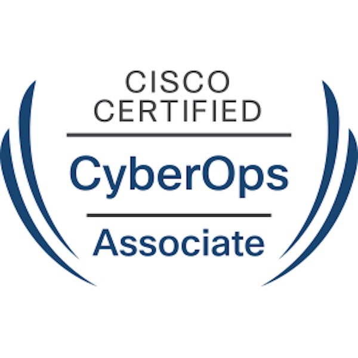
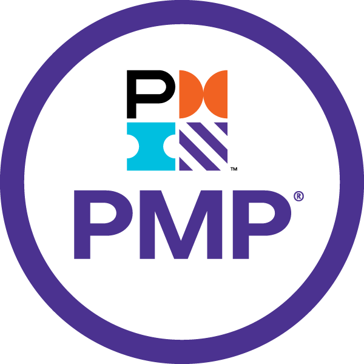

Professional Summary
I am a results-driven Data Scientist with a background in Computer Engineering and recently earned a Master of Science in
Data Science with a minor in Cybersecurity from American University. With over four years of hands-on experience in machine
learning, statistical analysis, and data engineering, I specialize in transforming complex datasets into actionable insights
that drive innovation and informed decision-making.
My expertise spans the full data lifecycle—from data ingestion and preprocessing to predictive modeling, visualization, and
strategic communication with stakeholders. I have contributed to impactful projects across public sector, healthcare,
education, and cybersecurity domains, including evaluating workforce mobility for the DC Department of Human Services and
developing digital learning infrastructure during the COVID-19 pandemic. I bring proficiency in Python, SQL, R, and Salesforce
Data Cloud, along with strong skills in cloud-based data platforms and data governance.
Driven by a passion for ethical, human-centered AI and data integrity, I aim to leverage data science to create equitable,
data-informed solutions that address real-world challenges. I thrive in collaborative, cross-functional environments where
innovation and measurable results are valued.
Academic Journey
Masters of Science in Data Science
American University
2023 - 2025
Bachelors of Science in Computer Engineering
Saint Monica University
2015 - 2018
Professional Experience

Lead Data Scientist (Research Assistant)
American University | 2023 - 2025
-
End-to-End Machine Learning Development:
Designed and deployed scalable ML pipelines using TensorFlow, PyTorch, and Keras—achieving up to 50% improvement in model accuracy for NLP and computer vision tasks.
-
Advanced NLP and LLM Expertise:
Applied transformer models (BERT, GPT) for document classification, sentiment analysis, and knowledge extraction, significantly enhancing insight generation from unstructured data.
-
Robust MLOps & Cloud Deployment:
Delivered production-ready ML solutions on AWS and Azure using CI/CD, Docker, and Kubernetes—supporting both real-time and batch inference scenarios.
-
Data Engineering at Scale:
Built and optimized high-throughput ETL pipelines with Apache Spark and Airflow, reducing latency by over 50% and processing 10M+ records/month across structured and unstructured sources.
-
Leadership & Communication:
Led and mentored cross-functional teams, authored technical documentation, and built interactive dashboards (Tableau, Power BI, ShinyApp) to drive collaboration and stakeholder engagement.
Systems and Database Engineer
Orange Sierra Leone | 2021 - 2023
-
Built cloud-native ML services: Developed scalable, containerized ML applications for image recognition and system analytics using Docker and Kubernetes.
-
Deployed CNN-based Computer Vision tools: Implemented deep learning models to automate internal diagnostics, improving image classification performance and operational efficiency.
-
Modernized legacy infrastructure: Migrated monolithic systems to distributed, cloud-ready architectures with integrated disaster recovery and ML integration capabilities.
-
Data Infrastructure & Security Collaboration: Worked closely with security, engineering, and product teams to align AI deployments with compliance and operational requirements.

Department Coordinator
AI Professional College | 2019 - 2023
-
Developed a custom E-learning platform: Designed and deployed a web-based learning management system using PHP and MySQL, enabling remote course delivery and student assessments during the COVID-19 pandemic.
-
Data Systems Management: Administered and optimized academic and administrative databases using MySQL, PostgreSQL, and MongoDB, improving data accuracy and retrieval speed.
-
Network and Systems Administration: Oversaw ICT infrastructure including LAN/WAN setup, server deployment, and automated backup systems, ensuring high system availability and data security.
-
Curriculum and Technical Instruction: Taught courses in Arduino programming, electronics, and database management, equipping students with practical skills in embedded systems and data handling.
-
Strategic Collaboration: Worked with faculty and leadership to integrate digital tools into the curriculum, supporting digital transformation and long-term tech resilience.
Core Skills
- Machine Learning & AI Supervised/unsupervised learning, deep learning, NLP, LLMs (BERT, GPT), computer vision
- Frameworks & Libraries TensorFlow, PyTorch, Keras, Scikit-learn, Transformers, OpenCV
- Cloud Platforms AWS (S3, SageMaker, EC2), Azure (ML Studio, DevOps), Google Cloud (BigQuery)
- Programming Python, R, SQL, PHP, Bash, JavaScript
- MLOps & DevOps CI/CD, Docker, Kubernetes, Git, MLflow, Airflow
- Data Engineering Apache Spark, Apache Airflow, ETL/ELT pipelines, data wrangling, data warehousing
- Databases PostgreSQL, MySQL, MongoDB, Oracle SQL
- Data Visualization Tableau, Power BI, ShinyApp, Matplotlib, Seaborn, Plotly
- Soft Skills Technical communication, cross-functional collaboration, team leadership, agile methodologies
Personal Goals and Motivation
As a Data Scientist and AI/ML Engineer, my core goal is to build intelligent systems that drive meaningful, measurable impact—whether that’s accelerating scientific research, enhancing operational efficiency, or improving human-centered decision-making. I am deeply motivated by the intersection of data, machine learning, and real-world application, and I continuously seek opportunities to push the boundaries of what AI can do in service of innovation and equity.
I thrive on solving complex problems with data, and I’m particularly passionate about:
- Developing robust ML pipelines that are scalable, ethical, and production-ready.
- Harnessing NLP and LLMs to extract insights from unstructured information at scale.
- Designing AI solutions that align with privacy, fairness, and transparency principles.
What I’m Looking for in an Organization
I’m drawn to organizations that:
- Value innovation and invest in research and experimentation.
- Encourage cross-functional collaboration and knowledge sharing.
- Offer a strong culture of mentorship, continuous learning, and technical excellence.
- Are committed to responsible AI practices and real-world impact, especially in domains like healthcare, education, social equity, and sustainability.
Ultimately, I’m looking to join a mission-driven team where I can apply my technical expertise, continue to grow as a leader and problem-solver, and contribute to building systems that matter.
Projects
Career Mobility Action Plan (Career MAP) Evaluation
Tools: R, Excel, Tableau, tidyverse, caret, NLP, Random Forest, XGBoost
Partnered with the DC Department of Human Services to evaluate the Career MAP
initiative—an effort to reduce poverty and promote economic stability through
integrated social services. The project focused on analyzing relocation trends,
program compliance, and economic indicators across vulnerable populations.
- Machine Learning: Designed classification models (Random Forest, XGBoost) to predict relocation likelihood and program compliance based on structured and unstructured inputs.
- Natural Language Processing: Applied NLP techniques to analyze open-ended survey responses and categorize participant urgent needs and career goals.
- ETL Pipelines: Built robust data cleaning and transformation workflows in R for integrating intake surveys, relocation logs, and benefit records into consistent analytical datasets.
- Data Visualization: Developed interactive Tableau dashboards and R visualizations (Sankey diagrams, maps, scatterplots) to communicate trends in ward-level mobility and rent shifts.
- Policy Engagement: Collaborated with policymakers to translate model outputs into clear, actionable recommendations around employment support, rent subsidies, and service delivery.
- Team Leadership: Led and mentored a team of 7 analysts, conducted code reviews, and facilitated agile sprints with retrospectives and planning sessions.
Learn More
Chest X-Ray Classification Using Apache Spark & Deep Learning
Tools: PySpark, TensorFlow, Keras, VGG19, ResNet101, EfficientNet, Grad-CAM, Docker, GitHub Actions
Designed and deployed a scalable end-to-end pipeline for classifying chest X-rays into four diagnostic categories:
COVID-19, Pneumonia, Tuberculosis, and Normal. This project bridges medical imaging with big data engineering and
deep learning to support real-time clinical decision-making.
- Big Data Integration: Used Apache Spark (PySpark) to preprocess 7,100+ images, extract metadata, and perform class balancing through oversampling and augmentation.
- Model Engineering: Fine-tuned CNN architectures — VGG19 and ResNet101 — achieving over 98% test accuracy with VGG19 and >90% with ResNet101. Integrated attention layers and batch normalization for robustness.
- Explainability: Applied Grad-CAM to generate heatmaps, highlighting relevant lung regions and enhancing clinical interpretability.
- Containerized Deployment: Developed a Dockerized pipeline for model serving and batch scoring. Streamlined model deployment using CI/CD pipelines via GitHub Actions for continuous integration and version control.
- API Delivery: Delivered a RESTful Flask API for real-time predictions, enabling scalable image classification support for clinical diagnostics.
- Result Analysis: Visualized model metrics (confusion matrix, ROC curves, F1-scores) and tracked performance using Pandas UDFs and Matplotlib.
Learn More
Credit Risk Assessment & Prediction Model Analysis
Tools: R, caret, dplyr, ggplot2, Random Forest, SVM, Logistic Regression
Collaborated on a comprehensive credit risk evaluation project using Kaggle’s Credit Risk Dataset,
consisting of 32,000+ loan records. The goal was to build predictive models that classify loan
status (good vs. bad) to guide lending decisions and reduce financial risk.
- Exploratory Data Analysis: Summarized and visualized borrower characteristics — income, age, loan amount, home ownership — and explored intent trends across loan purposes.
- Feature Engineering: Selected 8 critical predictors including loan grade, interest rate, income, and home ownership to train models after extensive preprocessing.
- Model Evaluation: Compared 10+ statistical and ML models including:
- Random Forest: Best performing model with 6.49% error rate.
- Decision Tree: Achieved 9.83% error rate with pruning.
- SVM: Tuned with radial kernel; error rate 10.78%.
- Logistic Regression, LDA, KNN: Error rates ranged between 13–16%.
- PLSR/PCR: Least effective, with 21.25% error rate.
- Regularization Techniques: Applied LASSO and Ridge Regression to address multicollinearity and enhance generalizability.
- Cross-Validation: Used 80/20 train-test split and repeated sampling to assess generalization performance.
- Insight: Identified loan amount, interest rate, loan grade, and income as the most predictive features.
Learn More

Railway Service Analysis - ShinnyApp Demo
Tools: R, Shiny, dplyr, ggplot2, leaflet, DT, tidyr
Developed an interactive R Shiny dashboard to explore and visualize
global railway infrastructure and performance metrics. The app allows users to compare
rail systems by region, year, and service indicators including rail length, passengers,
freight, and investments.
- Data Sources: Integrated multiple international datasets on railway usage, density, spending, and population for 100+ countries.
- Dynamic Filtering: Enabled users to filter data by country, year, and metric using reactive components and input controls.
- Interactive Visuals: Used
ggplot2 and leaflet to render global maps, time-series plots, and bar charts for comparative trend analysis.
- Tabular Insights: Displayed searchable and downloadable tables using
DT for deeper analysis of country-level performance.
- UI/UX Design: Built a clean, responsive interface with well-structured tabs for improved user navigation and mobile compatibility.
- Deployment: Published the final application to shinyapps.io for global access and usage.
Learn More
Machine Learning Models – Learning & Evaluation
Tools: Python, scikit-learn, NumPy, Matplotlib, Seaborn, Jupyter
Conducted a comprehensive study of fundamental and advanced machine learning models across key
domains including classification, regression, clustering, model selection, reinforcement learning,
and natural language processing. This project served as both a learning milestone and a performance
benchmark across real-world datasets.
- Classification: Evaluated models like Logistic Regression, Random Forest, Decision Trees, and SVMs on structured data with accuracy and F1-score comparisons.
- Regression: Applied Linear, Ridge, and Lasso regression to predict continuous outcomes with cross-validation and RMSE analysis.
- Clustering: Implemented K-Means and Hierarchical Clustering for unsupervised segmentation tasks, visualized using dendrograms and silhouette scores.
- Model Selection: Used K-Fold Cross Validation to compare model robustness and generalization on varying data splits.
- Deep Learning: Built a basic Artificial Neural Network (ANN) using TensorFlow/Keras to classify tabular data, tuning hyperparameters for performance.
- Natural Language Processing (NLP): Explored tokenization, TF-IDF, sentiment classification, and named entity recognition using libraries like NLTK and spaCy.
- Reinforcement Learning: Introduced foundational concepts with simple agent-environment interaction simulations using OpenAI Gym.
Learn More

ggplot2 Data Visualization Tutorial
Tools: R, ggplot2, dplyr, RMarkdown, Quarto
Developed a comprehensive tutorial on the ggplot2 package in R, guiding
learners through foundational and advanced techniques for data visualization. The tutorial
covers key components of the grammar of graphics, practical use cases, and layered plotting
strategies using real-world datasets.
- Concepts Covered: Aesthetics, Geoms, Scales, Facets, and Themes.
- Interactive Examples: Walked through step-by-step implementations of bar plots, scatterplots, histograms, and boxplots.
- Data Wrangling: Used
dplyr for filtering, summarizing, and grouping data prior to visualization.
- Layout & Styling: Demonstrated theme customization and advanced formatting for publication-ready plots.
- Reproducibility: Packaged as an HTML report using RMarkdown and Quarto for easy sharing and future learning.
Learn More
Certificates & Trainings
Salesforce Data Cloud Consultant Certified
Issued by Salesforce
Credential ID: 5592981
Issued: Jan 2025
This certification demonstrates my expertise in implementing and
optimizing Salesforce Data Cloud to deliver
real-time, personalized experiences by unifying customer data
across systems. Key competencies include:
- Data ingestion and harmonization from multiple sources
- Identity resolution and unified customer profiles
- Real-time segmentation and calculated insights
- Consent management and data governance
- Cross-cloud data activation (Marketing, Sales, Service)
View Credential on Salesforce Trailhead
Advance Machine Learning with R and Python
Issued by Udemy
Credential ID: UC-915de33c-705a-45af-a022-5784d392ae10
Issued: Nov 2024
This certification validates my expertise in applying advanced machine
learning techniques using both R and
Python. The program covered the end-to-end development
of predictive models, including:
- Ensemble learning (e.g., XGBoost, Random Forests)
- Deep learning with TensorFlow/Keras and R interfaces
- Natural Language Processing and text analytics
- Time series forecasting with ARIMA, Prophet, and LSTM
- Hyperparameter tuning, model evaluation, and deployment
View Credential on Udemy

Official (ISC)2 CBK Training Seminar for the CISSP
Provided by (ISC)2
Completed: Nov 2022
This official training seminar is designed to prepare candidates for
the Certified Information Systems Security Professional (CISSP) exam.
The course covers all eight domains of the (ISC)2 CISSP
Common Body of Knowledge (CBK) including:
- Security and Risk Management
- Asset Security
- Security Architecture and Engineering
- Communication and Network Security
- Identity and Access Management (IAM)
- Security Assessment and Testing
- Security Operations
- Software Development Security
This seminar provides comprehensive instruction from authorized
instructors and includes official courseware to enhance readiness for
the CISSP exam.
Learn More
MCSE: Microsoft Certified Solutions Expert – Server Infrastructure
Issued by Microsoft
Certificate Number: G629-2625
Issued: Jan 2018
TThe MCSE: Server Infrastructure certification validates expertise in
managing and maintaining a highly efficient, secure, and modern data
center. This includes skills in identity management, systems
management, virtualization, storage, and networking.
- Design and implement server infrastructure solutions
- Plan and deploy virtualized environments using Hyper-V
- Configure advanced network services and identity solutions
- Manage enterprise security and automation with PowerShell
- Maintain a scalable and resilient IT environment

Cisco Certified CyberOps Associate
Issued by Cisco Systems
Verification ID: 434294172280DPYN
Issued: Nov 2018
The Cisco Certified CyberOps Associate certification validates
foundational knowledge and hands-on skills required for cybersecurity
operations roles. This credential demonstrates proficiency in:
- Security monitoring and event analysis
- Incident response and digital forensics
- SIEM tools and threat intelligence
- Network intrusion analysis
- Understanding of security policies, procedures, and protocols
View Credential on Cisco Systems

PMP® Certification Training – PMI Framework
Training Provided by Cybrary
Certificate ID: C-7351b9833-a3c433b
Completed: Apr 2017
This training course is designed to prepare professionals for the
Project Management Professional (PMP®) certification exam, based on
the PMI (Project Management Institute) framework. The course covers
essential topics in alignment with the PMBOK® Guide, including:
- Project Integration, Scope, Time, and Cost Management
- Quality and Resource Management
- Communications and Stakeholder Engagement
- Risk and Procurement Management
- Agile and Hybrid Methodologies
- Ethical and Professional Conduct in Project Management
This course helps candidates understand the project lifecycle, master
industry-standard practices, and apply them in real-world scenarios
to lead successful projects.
View Certificate on Cybrary
Cisco Certified Newtorking Associate
Issued by Cisco Systems
Verification ID: G8T6KM7B4GQ4Q4W7
Issued: Jan 2016
The CCNA certification demonstrates your ability to install,
configure, operate, and troubleshoot medium-size routed and switched
networks. It also validates foundational knowledge in:
- Network fundamentals and IP services
- Routing and switching technologies
- Security fundamentals
- Wireless networking concepts
- Automation and programmability
View Credential on Cisco Systems